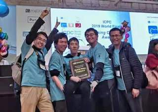

Yanyan's Wiki
这是 JYY 的隐藏个人主页，仅限校园网访问。由于没有固定 IP 地址 (那玩意申请很麻烦的)，收藏本页的同学请使用 http://ics.nju.edu.cn/~jyywiki (不要直接收藏地址栏中的链接)。
联系方式：jiangyy@outlook.com 或 jyy@nju.edu.cn。
课程主页
- 2020 年春季《操作系统》 (基础班/人工智能学院)；
- 2020 年春季《计算机系统综合实验》 (计算机系)。
科研
 JYY 来自南京大学计算机软件研究所的 SPAR (System and Program Analysis Research) 小组，关注“自动地让程序变得更好”的问题，主要有三个方面的研究：运行时系统 (hack 各种系统软件)、软件分析测试 (把软件捅出 bug 来)、程序合成 (自动生成小程序)。欢迎加入软件研究所的大家庭，硬♂核编程; AI for SE; SE for AI... 你值得拥有。
JYY 来自南京大学计算机软件研究所的 SPAR (System and Program Analysis Research) 小组，关注“自动地让程序变得更好”的问题，主要有三个方面的研究：运行时系统 (hack 各种系统软件)、软件分析测试 (把软件捅出 bug 来)、程序合成 (自动生成小程序)。欢迎加入软件研究所的大家庭，硬♂核编程; AI for SE; SE for AI... 你值得拥有。
程序设计竞赛
- 觉得课堂学的算法不够劲？参加程序设计竞赛，遇见更强大的对手。欢迎大家加入南京大学 ICPC 集训队！教练：马骏、蒋炎岩。
- 竞赛专题讨论班。